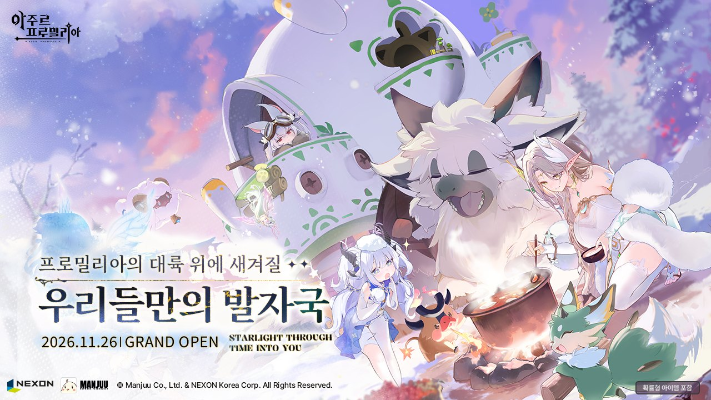

아주르 프로밀리아 키보 캠프 대작전 보상, 배추닭 번영도 12월 31일
아주르 프로밀리아 '키보 캠프 대작전'은 10월 23일 낮 12시부터 12월 31일 오후 11시 59분까지 열리는 웹 이벤트고, 번영도를 8,500까지 모으고 파티를 4명으로 채우면 '배추닭' 키보 코스튬을 받아요. 보상은 지금 바로 들어오는 게 아니라 11월 26일 정식 출시 뒤에 받는 방식이라, 이벤트는 열려 있는데 받는 날은 아직 한 달쯤 남아 있는 묘한 상황인데요.
출시일이 11월 26일로 정해진 이야기는 지난 글에서 이미 정리했으니, 오늘은 '번영도를 어디까지 모으면 뭘 받나'와 '배추닭은 며칠이면 닿나'에 집중할게요.
키보 캠프 대작전은 언제까지고, 보상은 언제 받나요?
키보 캠프 대작전은 2026년 10월 23일(금) 낮 12시부터 12월 31일(목) 오후 11시 59분까지고, 보상은 11월 26일(목) 정식 출시 이후에 받아요.
- 기간: 10월 23일(금) 12:00 ~ 12월 31일(목) 23:59
- 참여 조건: 15세 이상, 본인 확인이 끝난 넥슨ID 로그인 (공식 이벤트 페이지)
- 보상 수령: 이벤트 페이지에서 같은 넥슨ID로 로그인해 받거나, 그 넥슨ID로 게임에 접속해 우편함에서 받기
- 우편 보관 기간: 365일 (이벤트 안내문 기준)

11월 26일 정식 출시를 알린 공식 키비주얼이에요
이미지 출처: 인벤 기사 「넥슨 '아주르 프로밀리아', 11월 26일 정식 출시」 · 권리자 넥슨코리아·만쥬게임즈
이 이벤트는 쿠폰 코드를 입력하는 방식이 아니라 미션으로 번영도를 모으는 방식이에요.
번영도 구간별 보상은 뭐고, 배추닭은 얼마부터 받나요?
번영도는 누적 1,000부터 6,500까지 다섯 단계로 선물이 나오고, 배추닭 키보 코스튬은 누적 8,500에 파티 4명까지 채워야 받는 특별 선물이에요.
| 누적 번영도 | 받는 선물 |
|---|---|
| 1,000 | 유니 10,000 |
| 2,000 | 투명한 성맥 결정 5개 |
| 3,500 | 달콤한 스타위스퍼 열매 5개 |
| 5,000 | 눈부신 스타링크 카드 10장 |
| 6,500 | 특급 별의 은총 선물상자 2개 |
| 8,500 + 파티 4명 | [배추닭] 키보 코스튬 '치킨 시키신 분?' 1개 |
8,500에서 배추닭 코스튬을 받아요
다섯 단계는 번영도만 쌓으면 되지만 배추닭은 '파티 4명'이 따로 붙네요. 그래서 8,500을 혼자 채워도 파티가 3명이면 코스튬은 못 받고, 이때 마지막 선물은 6,500의 특급 별의 은총 선물상자 2개가 돼요. 인벤 기사에서도 12월 31일까지 이어지는 이벤트에서 유니, 특급 별의 은총 선물상자, 배추닭 키보 코스튬을 준다고 소개했어요.
번영도는 어떤 순서로 모으나요?
번영도는 캠프 관리인을 정하고, 건물 건설 미션을 끝낸 다음, 매일 일일 경영 미션을 도는 순서로 쌓여요. 안내문을 그대로 읽으면 건설 미션을 마친 뒤에 일일 미션을 돌라는 흐름인데, 어디까지 끝내야 열리는지는 아래 확인할 것에 따로 적었어요.
- 1단계 캠프 관리인 초대: 이벤트 페이지에서 '캠프 관리인 초대'를 눌러 테스트하고, 추천받은 관리인을 확정하면 키보 캠프에 들어가요.
- 2단계 건물 건설 미션: 7개 미션을 각각 1번씩 하고 [수령하기]를 눌러야 완료돼요.
- 3단계 일일 경영 미션: 키보를 건물에 배치해 매일 번영도를 쌓아요. 여기서 파티를 꾸리면 일일 미션 번영도에 배수가 붙어요. 만드는 법은 아래 질문에 정리했어요.
- 4단계 선물 획득: 번영도가 구간에 닿을 때마다 위 표의 선물을 받아요.
건설 미션은 이렇게 구성돼 있어요. 이벤트에 들어가는 시점에 따라 열려 있는 미션 수가 다를 수 있어요.
| 미션 | 할 일 | 번영도 | 함께 얻는 것 |
|---|---|---|---|
| 1 | 사전등록 참여하기 (휴대폰 번호 인증) | +200 | - |
| 2 | 공식 X 팔로우 | +200 | 용광로 건설, 확률로 키보 1마리 |
| 3 | 공식 유튜브 팔로우 | +200 | 가죽 가공대 건설, 확률로 키보 1마리 |
| 4 | X 이벤트 게시글 재게시 | +200 | 스타링크 석대 건설, 확률로 키보 1마리 |
| 5 | 파티원 초대 (파티를 꾸리면 완료) | +200 | 키보 농장 건설, 확률로 키보 1마리 |
| 6 | PC 버전 다운로드 (사전 다운로드 포함) | +200 | - |
| 7 | 이벤트 참여 넥슨ID로 플레이하여 캐릭터 Lv15 달성 | +2,000 | - |
이벤트 시작 전에 사전등록을 해 둔 분도 1번 미션 옆 [참여하기]를 눌러 번호를 인증해야 번영도가 들어오거든요. 일일 경영 미션은 아래 세 가지인데요, 매일 오전 0시에 초기화돼요.
| 일일 미션 | 횟수 | 번영도 |
|---|---|---|
| 이벤트 공유하기 | 매일 최대 1회 | +50 (확률로 키보 1마리) |
| 키보 파견 근무 | 매일 최대 4회 | +50 |
| 장난꾸러기 키보 찾기 | 매일 최대 4회 | +150 |
· 일일 미션의 +50·+150이 회당인지 4회 합계인지
· 파티 배수가 일일 미션 세 가지 전부에 붙는지
· 일일 미션이 열리는 조건이 건설 미션 전부인지, 6번(PC)·7번(Lv15)까지 필요한지
· 1번 사전등록의 마감 시점('별도 안내 시')과 6번 PC 다운로드의 시작 시점('추후 공개')
세부 조건은 이벤트 안내문 기준이라 바뀔 수 있으니 이벤트 화면에서 한 번 더 확인하세요.
배추닭까지 며칠 걸릴까요? 파티 인원별 계산
일일 미션을 매일 최대로 채운다고 치면 4명 파티는 8,500까지 1일 안에 닿는 계산이에요. 공식 안내문의 숫자로 계산한 값이라, 위에서 짚은 부분이 다르게 적용되면 일수도 달라질 수 있어요.
건설 미션을 전부 한다고 치면 번영도는 3,200(1~5번 1,000 + PC 200 + Lv15 2,000)이고, 사전등록과 PC를 못 하면 2,800이에요(일일 미션이 열리는 경우만의 가정이에요). 나머지를 일일 미션으로 채우는 최단 일수를 표로 뽑았는데, 배추닭은 파티 4명이 조건이라 1~3명 행은 마지막 선물인 6,500(특급 별의 은총 선물상자)까지 기준이에요.
| 파티 인원 | 배수 | 일일 최대(추정) | 최단 일수(목표 번영도) |
|---|---|---|---|
| 1명 | 없음 | 850 | 6,500까지 4~5일 |
| 2명 | 2배 | 1,700 | 6,500까지 2~3일 |
| 3명 | 4배 | 3,400 | 6,500까지 1~2일 |
| 4명 | 8배 | 6,800 | 8,500까지 1일 |
일일 최대 850은 공유 50, 파견 50×4, 찾기 150×4를 더한 값이고, 건설 합계가 2,800이냐 3,200이냐에 따라 1~3명 행은 일수가 갈려 범위로 적었어요(4명 행은 같아요). 표는 가장 빠른 경우라 현실 완주는 더 걸릴 수 있어요.
출시 전에 끝낼 수 있는 건설 미션은 1~6번이고, 합하면 1,200이에요. 일일 미션이 출시 전에 열리는지는 아직 몰라서 이 숫자에는 넣지 않았어요. Lv15의 2,000은 게임을 해야 하니 11월 26일 이후고요. 출시 뒤 12월 31일까지는 36일이라 시간은 꽤 넉넉한 편이거든요. 다만 파티를 꾸리기 전에 끝낸 일일 미션에는 배수가 안 붙으니 파티부터 맞춰 두는 게 좋아요.
자주 묻는 질문
Q. 파티는 어떻게 만들고, 나중에 바꿀 수 있나요?
이벤트 페이지에서 키보 캠프 입장, 나의 파티, [+] 순서로 들어가 파티를 만들거나 참가해요. 파티장이 파티 코드를 복사해 공유하면 파티원이 코드를 입력해서 들어오고, 해체하지 않으면 이벤트 기간 내내 유지돼요. 파티원이 있으면 해체할 수 없고, 이미 파티를 만든 사람은 다른 파티에 못 들어가서 먼저 해체해야 해요. 동일 명의의 여러 넥슨ID로는 파티를 못 꾸려요.
Q. 관리인을 잘못 골랐는데 바꿀 수 있나요?
확정하기 전이라면 테스트를 다시 해서 다른 관리인이 나올 수 있어요. 확정한 뒤에는 추가 테스트도, 관리인 변경도 안 됩니다. 파티원 프로필 사진을 누르면 서로의 궁합도 볼 수 있어요.
Q. 키보가 캠프 밖으로 도망가는 건 왜 그런가요?
건물에 배치한 키보도 매일 0시에 초기화되고, 초기화된 키보는 캠프 밖으로 도망칠 수 있어요. 건설 미션을 다 끝낸 직후에도 키보가 한 번 도망가요. 그 키보를 찾아 다시 배치하는 게 '장난꾸러기 키보 찾기' 미션인 거죠.
파티 만들기와 참가는 모두 이 버튼에서 시작해요
키보 캠프 대작전 정리
저라면 사전등록 인증과 X·유튜브 팔로우처럼 지금 되는 건설 미션부터 끝내 두고, 파티 4명은 출시 전에 맞춰 둘 것 같아요. 일일 미션이 열리는 조건이 어떻게 풀리든, 열린 뒤에는 배수로 쌓이니까요. 아주르 프로밀리아 사전예약 소식을 찾아 들어오셨다면 1번 미션부터 보세요. 출시 날이 기대되네요~ 즐겜하세요!
참고한 곳
· 아주르 프로밀리아 공식 이벤트 페이지 - 키보 캠프 대작전
· 이벤트 안내문 전문 (룰리웹 게시판 게재본)
· 인벤 - 넥슨 '아주르 프로밀리아', 11월 26일 정식 출시
· 바이라인네트워크 - 아주르 프로밀리아 정식 출시 소식
※ 2026.10.28 기준 정보예요.
✔ 아주르 프로밀리아 같이 보기 좋은 내용
· 넥슨 아주르 프로밀리아 출시일 11월 26일 확정, 출시 전 이벤트 마감일까지 정리